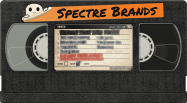
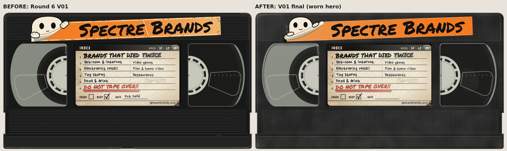
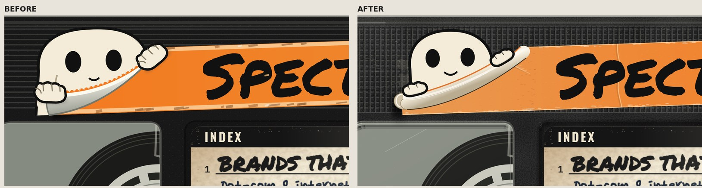
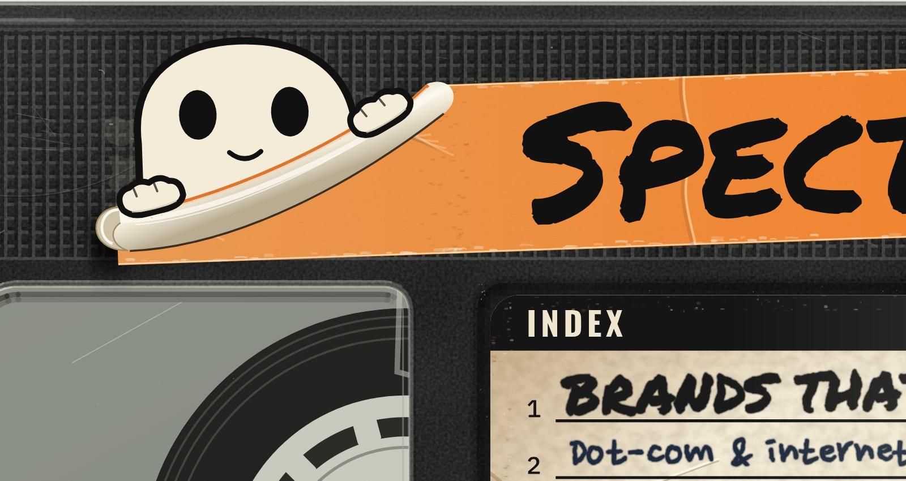
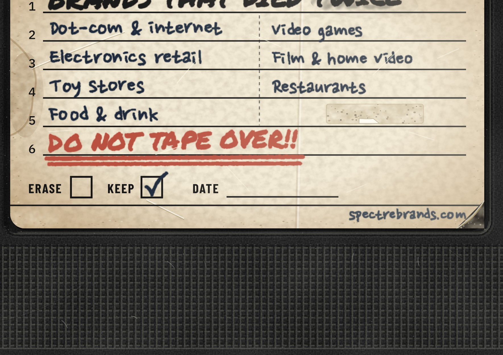
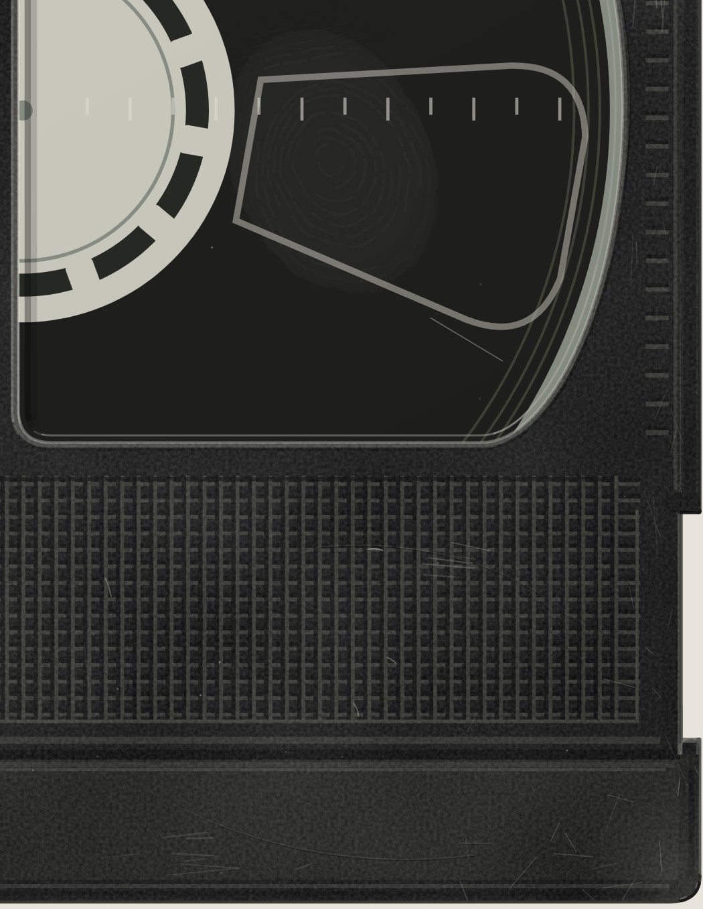

Round 7 locks Round 6 V01. The header stays “Brands That Died Twice” and the date is removed. The peel and hands were rebuilt from peel-photo references, and the shell now shows moulding detail and real-use wear.

Worn hero SVGWorn PNG 4000 pxClean SVGClean PNG 4000 px




